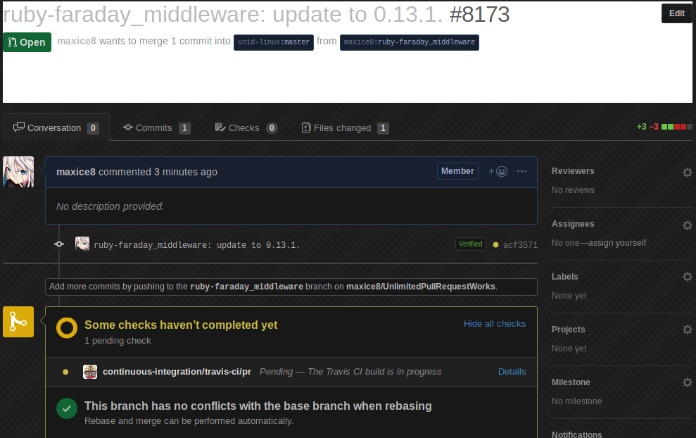
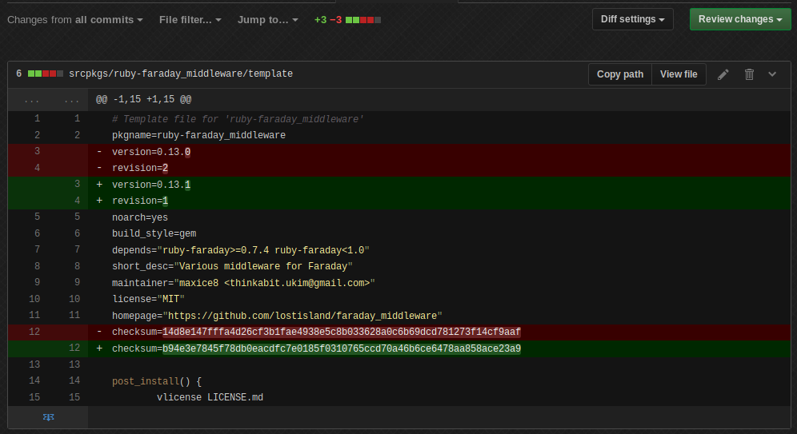

Updating packages with tmplgen
Introduction
This is a follow up tutorial on my first tutorial, Reading that is highly recommended and it is assumed you already know the basics covered in that.
Today i saw a package needed updating, ruby-faraday_middleware. A great opportunity to write this article in how tmplgen can help you keep your language specific packages updated.
./xbps-src update-check srcpkgs/ruby-faraday_middleware ruby-faraday_middleware-0.13.0 -> ruby-faraday_middleware-0.13.1
--update
First we are going to use -u or --update, which is the most common operator you will use for updating, here is the template in its current form:
# Template file for 'ruby-faraday_middleware' pkgname=ruby-faraday_middleware version=0.13.0 revision=2 noarch=yes build_style=gem depends="ruby-faraday>=0.7.4 ruby-faraday<1.0" short_desc="Various middleware for Faraday" maintainer="maxice8 <thinkabit.ukim@gmail.com>" license="MIT" homepage="https://github.com/lostisland/faraday_middleware" checksum=14d8e147fffa4d26cf3b1fae4938e5c8b033628a0c6b69dcd781273f14cf9aaf post_install() { vlicense LICENSE.md }
Looks neat to me, so now we are going to run tmplgen -u faraday_middleware.
$ tmplgen -u faraday_middleware
Silence, let's see what changed.
git diff
diff --git a/srcpkgs/ruby-faraday_middleware/template b/srcpkgs/ruby-faraday_middleware/template index a2cc2c51e7..8bd4e74ae1 100644 --- a/srcpkgs/ruby-faraday_middleware/template +++ b/srcpkgs/ruby-faraday_middleware/template @@ -1,7 +1,7 @@ # Template file for 'ruby-faraday_middleware' pkgname=ruby-faraday_middleware -version=0.13.0 -revision=2 +version=0.13.1 +revision=1 noarch=yes build_style=gem depends="ruby-faraday>=0.7.4 ruby-faraday<1.0" @@ -9,7 +9,7 @@ short_desc="Various middleware for Faraday" maintainer="maxice8 <thinkabit.ukim@gmail.com>" license="MIT" homepage="https://github.com/lostisland/faraday_middleware" -checksum=14d8e147fffa4d26cf3b1fae4938e5c8b033628a0c6b69dcd781273f14cf9aaf +checksum=b94e3e7845f78db0eacdfc7e0185f0310765ccd70a46b6ce6478aa858ace23a9 post_install() { vlicense LICENSE.md
How neat, it even resets revision to 1, let's build it just to be sure it is all OK.
$ xbps-src pkg ruby-faraday_middleware => Registering new packages to /host/binpkgs/ruby-faraday_middleware index: added `ruby-faraday_middleware-0.13.1_1' (noarch). index: 1 packages registered.
Seems fine to me, this package is ready for shipping to Travis CI which is then shipped into the builders and finally made available to our end users.
--UpdateAll
Before we go there is another method for update, -U or --UpdateAll, it acts the same way as -u|--update with a single difference, it also updates the distfiles and homepage variables.
Let's see if they have changed in this package.
$ tmplgen -U faraday_middleware [WARN libtmplgen::tmplwriter] Couldn't find 'distfiles' string and as such won't update it!
OK, it couldn't find distfiles and refused to replace it, a good idea since it would otherwise replace it with nothing.
git diff
diff --git a/srcpkgs/ruby-faraday_middleware/template b/srcpkgs/ruby-faraday_middleware/template index a2cc2c51e7..8bd4e74ae1 100644 --- a/srcpkgs/ruby-faraday_middleware/template +++ b/srcpkgs/ruby-faraday_middleware/template @@ -1,7 +1,7 @@ # Template file for 'ruby-faraday_middleware' pkgname=ruby-faraday_middleware -version=0.13.0 -revision=2 +version=0.13.1 +revision=1 noarch=yes build_style=gem depends="ruby-faraday>=0.7.4 ruby-faraday<1.0" @@ -9,7 +9,7 @@ short_desc="Various middleware for Faraday" maintainer="maxice8 <thinkabit.ukim@gmail.com>" license="MIT" homepage="https://github.com/lostisland/faraday_middleware" -checksum=14d8e147fffa4d26cf3b1fae4938e5c8b033628a0c6b69dcd781273f14cf9aaf +checksum=b94e3e7845f78db0eacdfc7e0185f0310765ccd70a46b6ce6478aa858ace23a9 post_install() { vlicense LICENSE.md
Oh, the homepage remained the same, good to know it didn't change.
Making a Pull Request
As a bonus i will also provide a sneak peek on how i make a PR for packages, using my simple xg wrapper around xbps-src, xtools and a few git operations and mkpr which is a wrapper around hub from GitHub for doing operations with GitHub.
xg
#!/bin/sh usage() { printf "usage: %s <-oebrxndlusah> [args]\\n" "$(basename "$0")" } help() { usage cat <<EOF -o --off-load : unpack distfile -e --edit : edit template -b --build : build package -r --rebuild : rebuild package -c --check : run the check phase after a cleanup -x --xgensum : run xgensum of template -X --Xgensum : run xgensum of template with -c -n --navigate : navigate srcpkgs dir of template -d --diff : see files removed and added between versions -l --lint : run xlint on template -u --update : run xbump on template -s --send : push to remote git -a --amend : amend commit -f --fetch : fetch distfile -h --help : show this message EOF } cmd="$1" if [ -z "$2" ]; then arg="$(git rev-parse --abbrev-ref HEAD)" else arg="$2" shift fi shift branch="$(git rev-parse --abbrev-ref HEAD)" case "$cmd" in -o|--off-load) ./xbps-src -I extract "$arg" "$@";; -e|--edit) e srcpkgs/"$arg"/template;; -b|--build) ./xbps-src -f -C pkg "$arg" "$@";; -r|--rebuild) ./xbps-src clean "$arg" && ./xbps-src -f pkg "$arg" "$@";; -c|--check) ./xbps-src clean "$arg" && ./xbps-src check -Q "$arg" "$@";; -x|--xgensum) xgensum -f -i srcpkgs/"$arg"/template "$@";; -X|--Xgensum) xgensum -f -c -i srcpkgs/"$arg"/template "$@";; -n|--navigate) f srcpkgs/"$arg" "$@";; -d|--diff) xbps-query --repository=hostdir/binpkgs/"$arg" -f "$arg";; -l|--lint) xlint srcpkgs/"$arg"/template;; -u|--update) xbump "${arg:-$branch}" "$@";; -s|--send) git push -uf origin "$arg" "$@";; -a|--amend) git commit --amend -v "$@";; -f|--fetch) ./xbps-src fetch "$arg" "$@";; -h|--help) help;; *) usage;; esac
mkpr
#!/bin/sh # SPDX-License-Identifier: GPL-3.0-only # mkpr [BRANCH] ... - mkpr create a pull request [ "$EDIT" ] && EDIT="--edit" || EDIT="--no-edit" while [ $# -gt 0 ] do if [ "$1" = "-r" ] then REVIEW="-r $2" shift elif [ "$1" = "-a" ] then ASSIGN="-a $2" shift elif [ "$1" = "-l" ] then LABEL="-l $2" shift elif [ "$1" = "-e" ] then EDIT="--edit" else args="$args $1" fi shift done [ -z "$args" ] && args="$(git rev-parse --abbrev-ref HEAD)" selectcommit() { git show -s --format=%B $(git log upstream/master.."$1" --pretty='%h %s' | fzy | cut -d ' ' -f1) } pr() { git rebase upstream/master >/dev/null 2>&1 git push -uf origin "$1" >/dev/null 2>&1 if [ "$(git rev-list --count upstream/master.."$1")" -gt 1 ] then msg="$(selectcommit "$1")" hub pull-request -h "$1" -m "$msg" $EDIT $ASSIGN $REVIEW $LABEL else hub pull-request -h "$1" $EDIT $ASSIGN $REVIEW $LABEL fi } for arg in $args do pr "$arg" done
Now we update the package
$ xg -u [ruby-faraday_middleware acf3571f22] ruby-faraday_middleware: update to 0.13.1. 1 file changed, 3 insertions(+), 3 deletions(-)
Ship it to my branch
$ xg -s Enumerating objects: 9, done. Counting objects: 100% (9/9), done. Delta compression using up to 4 threads Compressing objects: 100% (4/4), done. Writing objects: 100% (5/5), 1.17 KiB | 1.17 MiB/s, done. Total 5 (delta 3), reused 0 (delta 0) remote: Resolving deltas: 100% (3/3), completed with 3 local objects. To https://github.com/maxice8/UnlimitedPullRequestWorks 00a0a4ad94..acf3571f22 ruby-faraday_middleware -> ruby-faraday_middleware Branch 'ruby-faraday_middleware' set up to track remote branch 'ruby-faraday_middleware' from 'origin'.
And use mkpr to create a pull request:
$ mkpr http://github.com/void-linux/void-packages/pull/8173
Neat, let's check it out.

Looks good to me, and the diff ?

All done.